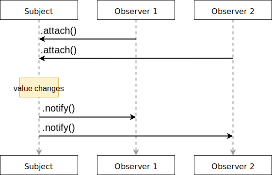

Maps each source value to the given Observable innerObservable regardless of the source value, and then flattens those resulting Observables into one single Observable, which is the output Observable.
The output Observables emits values only from the most recently emitted instance of innerObservable.
© .switchMapTo API documentation
In the Observer pattern, the subject maintains a list of its dependents, called observers, and notifies them automatically of any state changes
Example | Producer | Consumer | |
|---|---|---|---|
| Pull | data = getData(); | Passive | Active |
| Push | dataProducer()dataProducer() //internal stuff .onData(reactToData); | Active | Passive |
anyPromise() //resolve()
.then((data) => doSomething(data))| Single | Multiple | |
|---|---|---|
| Pull | Function<value> | Iterator<values> |
| Push | Promise<value> | Observables<values> |
// traditional
document.addEventListener('keydown', () =>
console.log('Key down!'));
// reactive
Rx.Observable.fromEvent(document, 'keydown')
.subscribe(() => console.log('Key down!'));const input$ = Rx.fromEvent(document, 'keydown')
.pipe(pluck('key'), share());.pipe(pluck('key'), share());
input$.subscribeinput$.subscribe(key => outputNicely(key));
input$input$.pipe(
bufferCount(5, 1)bufferCount(5, 1)
, filter(buffered => buffered.join('') === 'param')filter(buffered => buffered.join('') === 'param')
).subscribe.subscribe(keys => outputNicely('PAM PAM'))const input$ = Rx.fromEvent(document, 'keydown')
.pipe(pluck('key'), share());
input$.subscribe(key => outputNicely(key));
input$.pipe(
bufferCount(5, 1)
, filter(buffered => buffered.join('') === 'param')
).subscribe(keys => outputNicely('PAM PAM'))type 'param':
const pam = document.getElementById('pam');
const pampam = document.getElementById('pampam');
const input$ = Rx.fromEvent(document, 'keydown', true)
.pipe(
op.filter(() => Reveal.getCurrentSlide().getAttribute('data-capture'))
, op.filter(({keyCode}) => 65 <= keyCode && keyCode <= 90)
, op.tap(e => e.stopImmediatePropagation())
, op.pluck('key')
, op.share()
);
input$.subscribe(key => {
createFadingElement(pam, key);
});
input$.pipe(
op.bufferCount(5, 1)
, op.filter(buffered => buffered.join('') === 'param')
)
.subscribe(e => {
createFadingElement(pampam, 'PAM-PAM!');
})A representation of any set of values over any amount of time. This is the most basic building block of RxJS
Maps each source value to the given Observable innerObservable regardless of the source value, and then flattens those resulting Observables into one single Observable, which is the output Observable.
The output Observables emits values only from the most recently emitted instance of innerObservable.
© .switchMapTo API documentationclass Rx.Observable {
private _isScalar: boolean
private source: Observable
private operator: Operator
constructor(subscribeFunction) {...}
lift(operator) {...}
subscribe(observer) {...}
pipe(observer) {...}
}export class Observable<T> implements Subscribable<T> {
public _isScalar: boolean = false;
source: Observable<any>;
operator: Operator<any, T>;
constructor(subscribe) {
this._subscribe = subscribe;
}
lift<R>(operator: Operator<T, R>): Observable<R> {
const observable = new Observable<R>();
observable.source = this;
observable.operator = operator;
return observable;
}
subscribe(sink: Observer) {
if (this.operator) {
sink.add(this.operator(this.source));
} else {
sink.add(this.source || this._subscribe(sink))
}
return sink;
}
_subscribe(subscriber: Subscriber): TeardownLogic {
const {source} = this;
return source && source.subscribe(subscriber);
}
pipe(...operations: OperatorFunction)
}lift
not pure functions
used to avoid spoiling Observable.prototype.
const pipe = (...mapFunctions) => mapFunctions
.reduce((observable, mapFunction) => mapFunction(observable));cold > hot
hot > cold
real life examples
const observer = (name) => ({
next: (value) => log(`observer[${name}].next(${value})`),
complete: () => log(`observer[${name}].complete()`)
});
const oneTwo$ = Rx.Observable.create((subscriber) => {
subscriber.next(1);
subscriber.next(2);
subscriber.complete();
}).pipe(share());
oneTwo$.subscribe(observer('a'));
oneTwo$.subscribe(observer('b'));// observer[a].next(1)
// observer[a].next(2)// observer[a].next(1)
// observer[a].next(2)
// observer[a].complete()
// observer[b].next(1)
// observer[b].next(2)
// observer[b].complete()#todo explanation